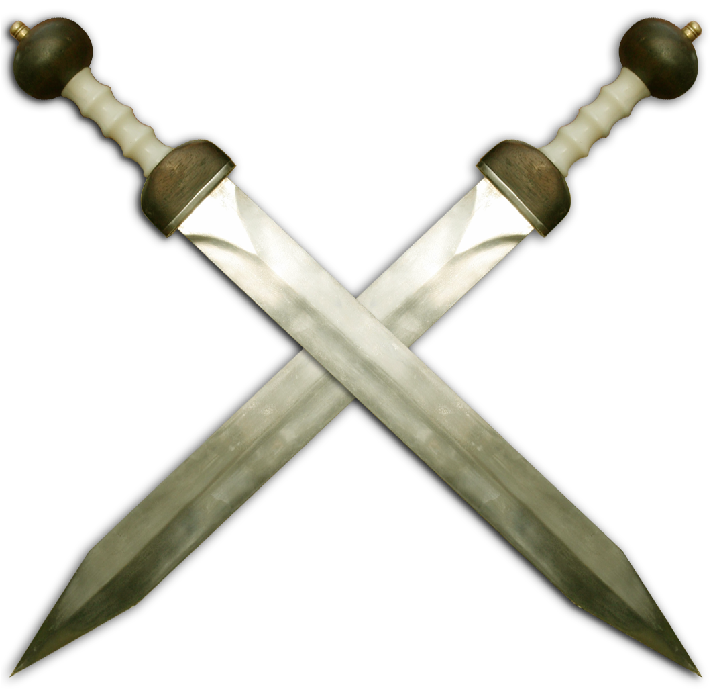

So you are thinking, how do I win that magnificent custom laser-cut gameboard?
Here's how: download the example bot in the language of your choice (Java/C#/Python) and improve it to become the very best!
Our matchmaker will continually be pitting the latest bots against each other to determine the true Master of Stones
Let's start
To begin the game, White makes a move. This move must be a capture.
How to capture: pick one of your stones (of any type) and move it in one of 6 directions where the first stone is occupied by an opponent's piece. The opponent's piece is now removed from the game.
2 moves per turn After White has started the game with only one move, players always have two moves per turn.
The first move of any turn must always be a capture. If you cannot capture, you lose!
After your first capture you can make another capture, reinforce or pass.
Choose Wisely!
Capture, Reinforce or Pass

Capture
Any stone can capture another stone, as long as the other stone has not been reinforced to be stronger than the attacking stone.
Reinforce
Instead of moving a stone onto an opponent's stone, you can also move it on one of your own stones to reinforce it!
The other stone will be removed from the board and its strength will be added to the reinforcing stone.
Pass
Sometimes it is better to do nothing.
In that case, you can pass.
Illegal moves
If your bot makes an illegal move, or stops running, you lose the game immediately.